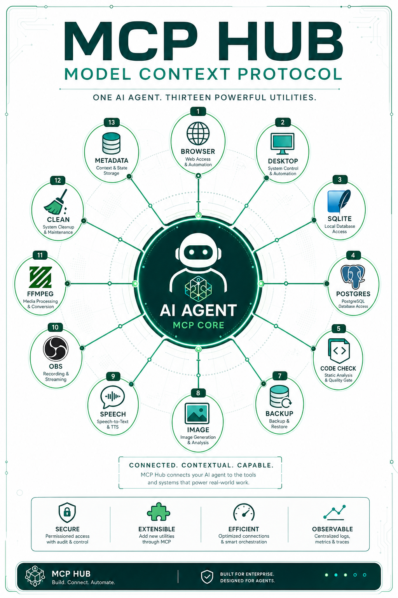

AiDiy の MCP サーバーはポート 8095 に集約され、Chrome / Desktop / SQLite / PostgreSQL / Logs / Code Check / Backup / 画像生成 / 音声 / OBS / FFmpeg など 13 ツールを提供します。
MCP サーバーは `backend_mcp/mcp_main.py` にまとめて定義され、ポート 8095 で常駐する。
Chrome DevTools MCP は Python 実装で CDP を直接操作し、スクリーンショット・DOM 取得・操作が可能。
MCP ツールはすべて localhost 限定で、セキュリティ境界を明確に保つ設計。
Backend MCP: 13 個の MCP サーバー（Chrome, Desktop, SQLite, PostgreSQL, Logs, Code Check, Backup Check, Backup Save, Image Generation, Speech-to-Text, Text-to-Speech, OBS Studio Control, FFmpeg Control）
MCP Hub は `backend_mcp/mcp_main.py` で FastMCP を使い、ポート 8095 に集約されます。